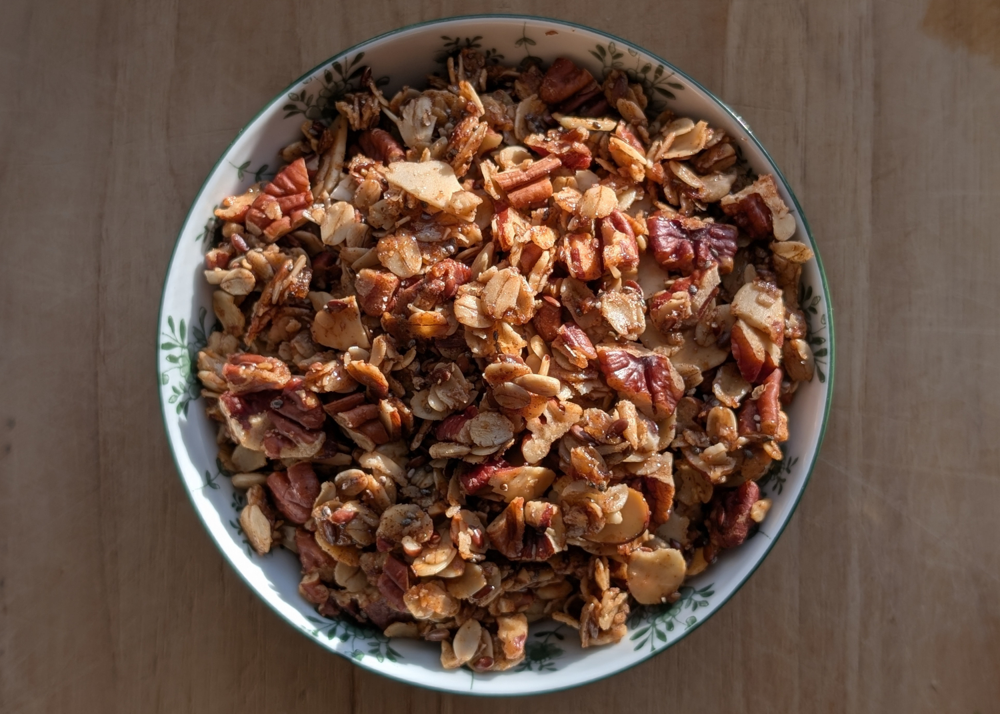

Granola

Author: Derek Nichols and McKenzie Weyant |
Cooked: April 9, 2025
Yields: 16 Servings | Prep Time: 10 Minutes | Cook Time: 26 Minutes
Ingredients
- 2 c. rolled oats
- 1 c. chopped pecans
- 1/2 c. sliced almonds
- 1/4 c. sunflower seeds
- 1/4 c. flax seeds
- 1 Tbs chia seeds
- 1 1/2 Tbs sugar
- 2 tsp cinnamon
- 1/2 tsp salt --------------------------
- 1/4 c. coconut oil
- 1/4 c. brown sugar
- 2 Tbs honey
- 1 1/2 tsp vanilla extract
Directions
- Preheat oven to 300°F and line a large baking pan with parchment paper.
- In a large (preferably glass) mixing bowl, combine all the dry ingredients and stir to combine.
- In a small pan over medium heat, bring coconut oil, brown sugar, and honey to a simmer while stirring occasionally.
- Once it has been simmering for a few seconds, remove from the heat and add the vanilla. It will bubble -- don't be surprised.
- Add the wet ingredients to the dry and stir to combine completely. Taste the mixture to see if it needs any extra salt or sugar.
- Spread evenly over the pan and bake for 20 minutes. Remove from oven and toss with a spatula. Spread back into an even layer and bake for another 6 minutes.
- Let cool on the pan until dried and solid. Then add to storage container while breaking into smaller pieces.
Additional Notes
- I mainly use this for yogurt, but I'd be lying if I said I didn't also regularly add this to ice cream...